worksheet.html: po jednej jednostronnej czarno-białej A4 dla każdego ucznia, maksymalnie 15, ewentualnie 20. Rozdaj na początku. Nie drukuj klucza uczniom.index.html w prywatnym podglądzie. Strzałki zmieniają slajdy, S pokazuje notatki, F pełny ekran, B czarny ekran. Ilustrację można powiększyć, Escape zamyka.„Wyobraźcie sobie państwo, którego król właśnie umarł. Nie ma dziecka, które mogłoby przejąć tron. Czy korona powinna trafić do jego krewnego, najsilniejszego sąsiada czy osoby wybranej? A kto właściwie powinien wybierać? Dziś sprawdzimy, dlaczego samo zdobycie korony jeszcze nie oznaczało pełnej swobody rządzenia”.
„Na początku pytaliśmy, kto ma dostać koronę. Teraz wiemy, że równie ważne było drugie pytanie: czego królowi wolno, a czego nie. Szlachta nie chciała tylko wybrać osoby — chciała też zachować wpływ na jej rządy. Zapamiętajcie różnicę: stałe zasady w artykułach, osobiste zobowiązania w pacta conventa”.
To samodzielna droga zastępcza, nie nowa paczka zadań do dołożenia do lekcji z projektorem.
Zygmunt II August zmarł bez potomstwa 7 lipca 1572. Podczas bezkrólewia funkcję interrexa pełnił prymas Jakub Uchański. Szlachta osobiście uczestniczyła w wyborze monarchy na sejmie elekcyjnym 1573 pod Warszawą. Nie było to prawo wszystkich mieszkańców.
Kandydaci: Henryk Walezy—Francja, brat króla Karola IX; Ernest Habsburg—Austria, syn cesarza; Iwan IV Groźny—państwo moskiewskie, car; Jan III Waza—Szwecja, mąż Katarzyny Jagiellonki. Wybrano Henryka.
Artykuły henrykowskie: stałe zasady ustroju—wolna elekcja, sejm co najmniej co dwa lata, zgoda sejmu na nowe podatki i ważne decyzje wojenne, prawa szlachty i pokój religijny. Pacta conventa: osobiste zobowiązania Henryka—m.in. francuskie wsparcie wojskowe, wsparcie Akademii Krakowskiej i nauki młodzieży we Francji.
Fragment źródła: Podatków […] postanawiać nie mamy, bez dozwolenia wszech stanów na sejmie walnym.
Pytanie przed odczytem: czy król mógł sam nałożyć nowy podatek? Wskaż słowa uzasadniające odpowiedź. „Dozwolenie” oznacza zgodę.
Oba poniżej 15 min. Przy 38 min całej lekcji film zastępuje część wyjaśnienia, nie dochodzi ponad scenariusz. Najbezpieczniej użyć go do późniejszej powtórki. Brak Internetu nie blokuje żadnego zadania.
Uczeń wskazuje szlachtę jako wyborców; wyjaśnia stała zasada / osobiste zobowiązanie; podaje konkretny problem, nie samo „było źle”.
Trzy elementy obserwacji, nie zapowiedziana kartkówka. Przy myleniu dokumentów wróć do jednego przykładu, nie powtarzaj całej prezentacji.
Poniższa treść odpowiada slides.md; nie jest drugim, zmienionym scenariuszem. Ilustracje są dołączone lokalnie. Źródła i licencje w sources.md, nie na ekranie ucznia.
Dokładny tekst i kompozycja:
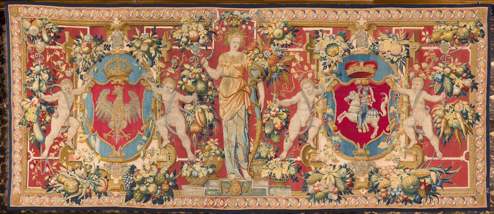
1572–1575 · Korona za warunki
Król umarł. Kto teraz decyduje?
Ilustracja: arras-1560.jpg
Co powiedzieć / zrobić: Rozpocznij: „Wyobraźcie sobie państwo, którego król właśnie umarł. Nie ma dziecka, które mogłoby przejąć tron. Czy korona powinna trafić do jego krewnego, najsilniejszego sąsiada czy osoby wybranej przez mieszkańców? Których mieszkańców?”. Zbierz dwie krótkie odpowiedzi; nie rozstrzygaj jeszcze. Dzisiejsze pytanie: dlaczego wybrany król musiał przyjąć warunki? Arras z 1560 r., autentyczne dzieło z epoki, nie obraz elekcji.
Dokładny tekst i kompozycja:
7 lipca 1572
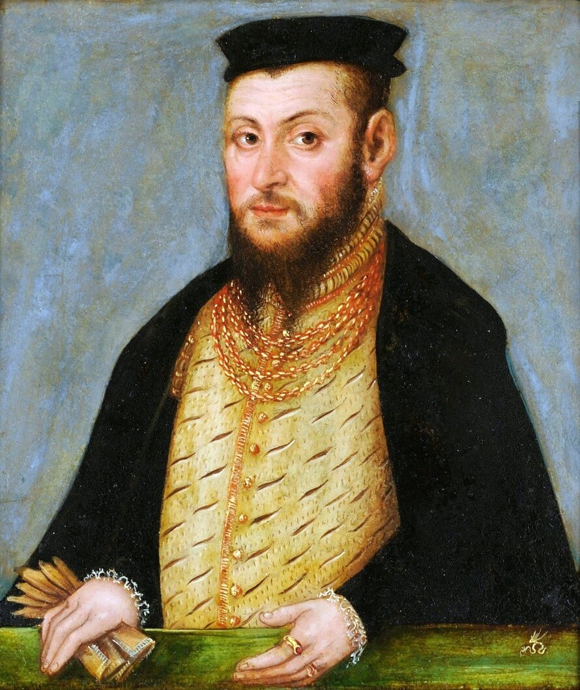
Ilustracja: zygmunt-august.jpg
Co powiedzieć / zrobić: Powiedz: „Brak potomstwa oznacza, że król nie pozostawił dzieci. Żyła jednak jego siostra Anna Jagiellonka — nie wymarła cała rodzina”. Nie nazywaj tego pierwszym bezkrólewiem w całych dziejach Polski: to pierwsze bezkrólewie po wygaśnięciu męskiej linii Jagiellonów. Prawo wybierania królów miało wcześniejsze tradycje; nowością był utrwalony model elekcji viritim.
Dokładny tekst i kompozycja:
Interrex — „między królami”
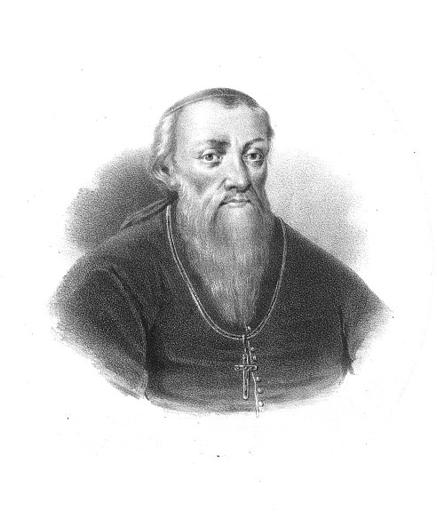
Ilustracja: uchanski.jpg
Co powiedzieć / zrobić: Wyjaśnij „prymas”: najwyższy godnością biskup w Polsce. Po śmierci Augusta istniał spór o kierowanie bezkrólewiem; pozycja prymasa jako interrexa dopiero się utrwalała. Państwo nie przestało istnieć: działały senat, sejmiki i lokalne związki szlachty zapewniające porządek. Nie utożsamiaj interrexa z jedynym zarządcą wszystkich spraw.
Dokładny tekst i kompozycja:
Wolna elekcja — wybór monarchy przez szlachtę, a nie automatyczne dziedziczenie tronu.
Prawo osobistego udziału miał każdy szlachcic. Nie każdy mógł i chciał przyjechać.
Chłopi i mieszczanie nie mieli takiego prawa wyboru. Szlachcianki także nie brały udziału na tych zasadach.
„Wolna” nie znaczy „powszechna jak dzisiejsze wybory”.
Ilustracja: Autorski układ treści: dokument / oś / pole zadania; bez osobnej ilustracji dekoracyjnej.
Co powiedzieć / zrobić: Wyjaśnij bez przeciwstawiania „wszyscy Polacy” i „szlachta”: Rzeczpospolita obejmowała wiele narodowości, a uprawnienie wynikało ze stanu szlacheckiego. Wybierano wspólnego monarchę Polski i Litwy. Nie przedstawiaj głosowania jako nowoczesnych tajnych wyborów większościowych. Poproś o jedno wskazanie, kto nie decydował.
Dokładny tekst i kompozycja:
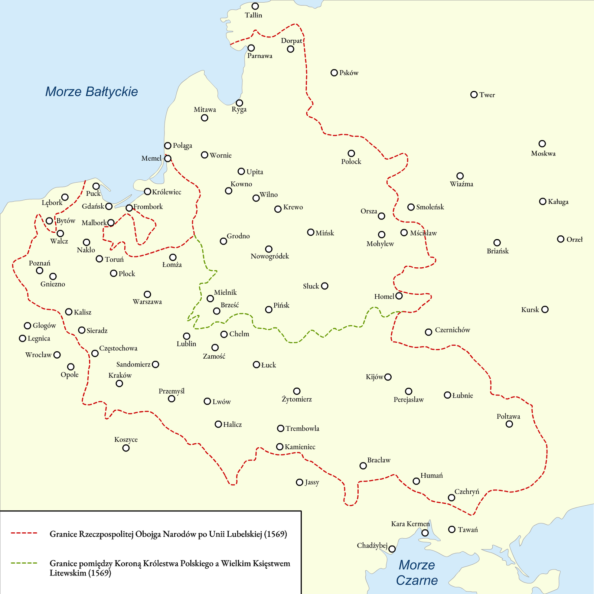
Ilustracja: polska-litwa-1569.png
Co powiedzieć / zrobić: Wskaż Warszawę, Kraków i Wilno; uczeń wskazuje Warszawę jako okolicę elekcji. Mapa przedstawia granice po unii 1569, służy orientacji, nie lokalizacji konkretnego pola. Pierwsza elekcja odbyła się w 1573 pod Warszawą, na prawym brzegu Wisły: Kamień/Kamion, okolice dzisiejszego Kamionka. Nie Wola: tam odbywały się późniejsze elekcje. Nie rysujemy zmyślonego dokładnego położenia pola.
Dokładny tekst i kompozycja:
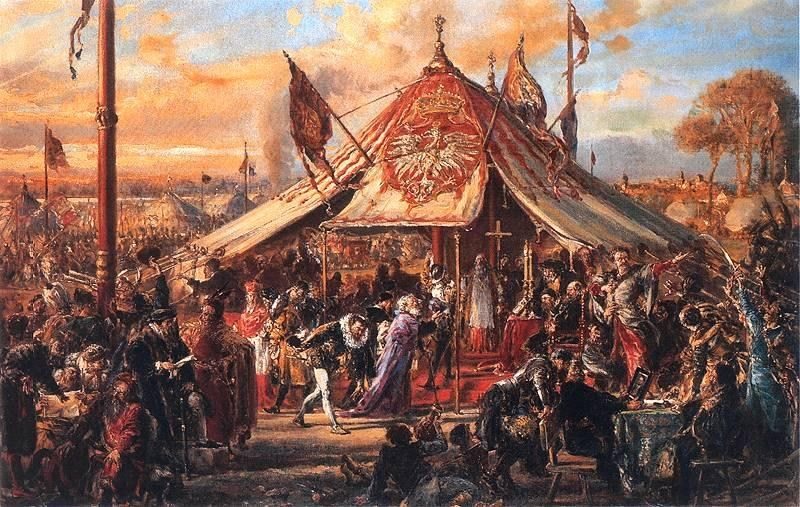
Obrady według województw.
Przedstawiają obietnice i argumenty.
Interrex ogłasza wybranego władcę.
Sejm elekcyjny w Kamieniu/Kamionie — nie lokalny sejmik.
Ilustracja: election-1573.jpg
Co powiedzieć / zrobić: Obraz Matejki 1889, wizja elekcji 1573, nie relacja naocznego świadka ani plan pola. Nie odczytuj układu postaci jako dokumentacji procedury. Szlachta obradowała według województw, posłowie reprezentowali kandydatów, interrex ogłaszał wybór. Nie nowoczesne tajne głosowanie z urnami; dążono do zgody, bywały spory. Ciekawostka: pierwsza elekcja na prawym brzegu Wisły, późniejsze głównie na Woli.
Dokładny tekst i kompozycja:
Karta ucznia · część 1 · 1 minuta
1572: bezpotomna śmierć ____________________.
Bezkrólewie = czas ____________________.
Interrex: prymas ____________________.
1573: szlachta wybiera króla pod ____________________.
Ilustracja: Autorski układ treści: dokument / oś / pole zadania; bez osobnej ilustracji dekoracyjnej.
Co powiedzieć / zrobić: Rozdaj wcześniej po jednej karcie na ucznia, także w niepełnej parze. Teraz uczeń sam uzupełnia pierwsze cztery krótkie miejsca, bez przepisywania całego slajdu. Klucz tylko w przewodniku. Wsparcie: pozwól zajrzeć do poprzednich slajdów. Nie pokazuj klucza przed samodzielnym zapisem.
Dokładny tekst i kompozycja:
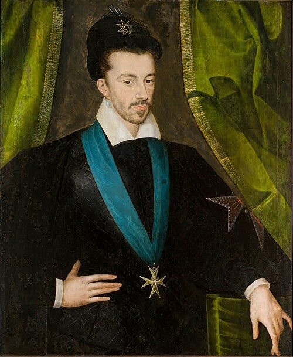
Francja
Brat króla Francji; jego poselstwo składało obietnice wsparcia.
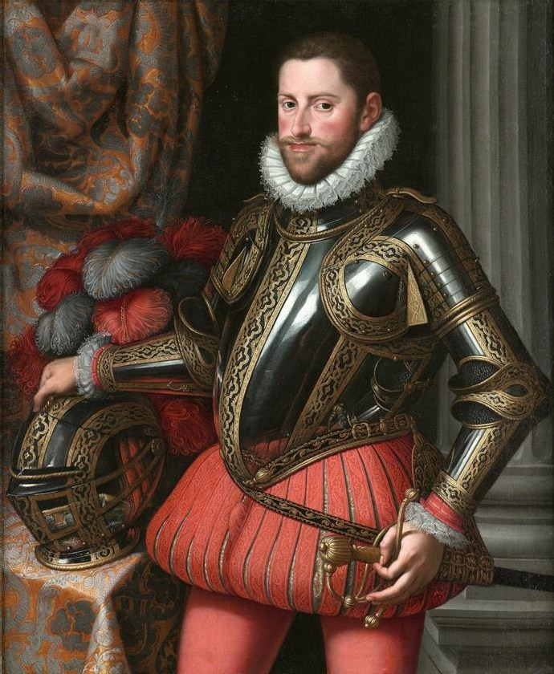
Austria · Habsburgowie
Syn cesarza; kandydatura potężnej dynastii.
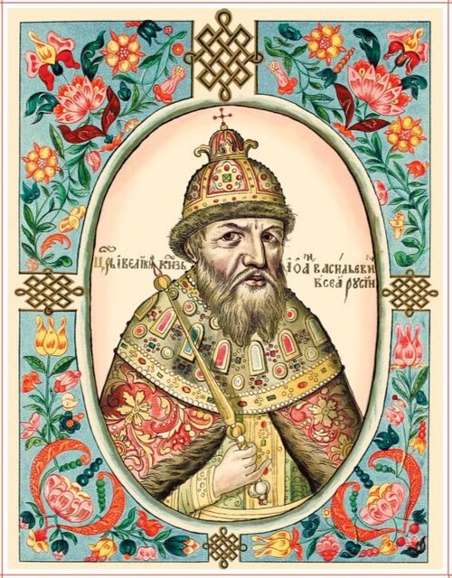
Państwo moskiewskie
Car i przeciwnik Rzeczypospolitej w wojnach o ziemie i wpływy.
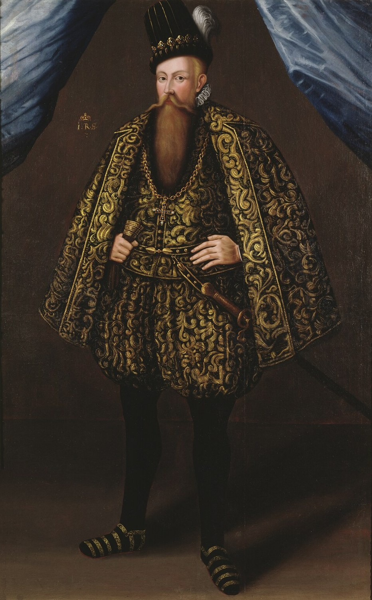
Szwecja
Król Szwecji; mąż Katarzyny Jagiellonki, siostry Zygmunta Augusta.
Ilustracja: henryk.jpg; ernest-rota.jpg; ivan.jpg; jan-waza.jpg
Co powiedzieć / zrobić: Przedstaw cztery ważne rozważane kandydatury, nie zamkniętą urzędową listę jedynych dopuszczonych osób. W dyskusjach pojawiali się też inni, w tym rodzimy „Piast” bez jednej powszechnie uzgodnionej osoby. Nie dodawaj Stefana Batorego jako głównego kandydata tej elekcji — jego wybór nastąpi później. Moskwa: rozważano też syna Iwana, Fiodora. Jan III to nie Zygmunt III. Portrety nie są fotografiami.
Dokładny tekst i kompozycja:
Porozmawiajcie w parze:
Wybierzcie jeden argument i jedną wątpliwość.
Ilustracja: Autorski układ treści: dokument / oś / pole zadania; bez osobnej ilustracji dekoracyjnej.
Co powiedzieć / zrobić: Daj 40 s rozmowy; zbierz dwie odpowiedzi po 15 s, potem zwięzłe domknięcie. Nie urządzamy kolejnej pełnej symulacji wyborów. Model: związek rodzinny Jana z Jagiellonami mógł ułatwiać akceptację, ale nie gwarantował dobrych rządów; obietnice poselstwa wymagały oceny realności; potęga dynastii mogła dawać wsparcie, lecz budzić obawę o samodzielność. Nie ma jednej poprawnej kandydatury uczniowskiej.
Dokładny tekst i kompozycja:
Henryk Walezy
Ilustracja: henryk.jpg
Co powiedzieć / zrobić: Wybór maj 1573, koronacja w Krakowie w lutym 1574. Daty nie są tym samym wydarzeniem. Nie nazywaj go pierwszym w historii królem Polski, którego kiedykolwiek wybierano. Wiadomość o wyniku poprzedzała jego przyjazd do Polski o wiele miesięcy. Szczegółową datę wyboru podaj tylko zgodnie z research: różne etapy wskazywane są jako 11 i 16 maja.
Dokładny tekst i kompozycja:
Dla kolejnych monarchów
Stałe zasady ustroju i ograniczenia władzy królewskiej.
Dla konkretnego monarchy
Osobiste zobowiązania uzgodnione z wybranym władcą.
Król miał je zaakceptować — nie wymyślał ich sam.
Ilustracja: Autorski układ treści: dokument / oś / pole zadania; bez osobnej ilustracji dekoracyjnej.
Co powiedzieć / zrobić: „Ustrój” oznacza sposób organizacji władzy w państwie. Łacińskie pacta conventa to uzgodnione warunki. Wyjaśnij analogię tylko ustnie: stałe zasady obowiązujące wszystkich i indywidualna umowa. Artykuły nazwano od Henryka, nie dlatego, że sam je napisał. Oba teksty powstały w pracach politycznych podczas elekcji; istniały różnice między akceptacją, przysięgą i późniejszym zatwierdzeniem. Nie przeciążaj VI procedurami. Paryskie przyjęcie zobowiązań nie jest tym samym co ponowne zatwierdzenie na sejmie koronacyjnym 1574: Henryk odmówił tego ostatniego; artykuły zatwierdził Stefan Batory 1576.
Dokładny tekst i kompozycja:
Tron nie staje się dziedziczny. Kolejnego króla wybiera szlachta.
Co najmniej co dwa lata; zwykłe obrady do sześciu tygodni.
Król potrzebuje zgody sejmu na nowe podatki i ważne decyzje wojenne.
Ma szanować prawa szlachty i pokój religijny.
Łamanie przyjętych praw mogło zwolnić poddanych z posłuszeństwa.
Ilustracja: Autorski układ treści: dokument / oś / pole zadania; bez osobnej ilustracji dekoracyjnej.
Co powiedzieć / zrobić: Uzupełnij ważne założenia: senatorowie rezydenci mieli kontrolować i doradzać królowi; monarcha nie mógł samowolnie zarządzać pospolitym ruszeniem. Sejm zwyczajny co dwa lata nie wykluczał zwołania go wcześniej. Nie mów, że artykuły wprowadzały liberum veto, ani że każdy mógł od razu dowolnie nie słuchać króla. Zachowanie pokoju religijnego wiązało się z konfederacją warszawską. Zapytaj krótko, który zapis najmocniej ogranicza samowolę.
Dokładny tekst i kompozycja:
Przeczytaj fragment na następnym slajdzie.
Wskaż słowa, które uzasadniają odpowiedź.
Ilustracja: Autorski układ treści: dokument / oś / pole zadania; bez osobnej ilustracji dekoracyjnej.
Co powiedzieć / zrobić: Pytanie PRZED tekstem źródłowym. Poproś, aby para odnalazła odpowiedź w cytacie, nie tylko przypomniała ją z wykładu. Wyjaśnienie archaizmów będzie obok fragmentu.
Dokładny tekst i kompozycja:
Dokument z 1573 roku · fragment
Podatków […] postanawiać nie mamy, bez dozwolenia wszech stanów na sejmie walnym.
„Dozwolenie” — zgoda; „sejm walny” — ogólnopaństwowy sejm.
Ilustracja: Autorski układ treści: dokument / oś / pole zadania; bez osobnej ilustracji dekoracyjnej.
Co powiedzieć / zrobić: Czytanie 30 s, rozmowa w parze 20 s, jedna odpowiedź z uzasadnieniem. Nie: potrzebował zgody sejmu. Słowa „bez dozwolenia” wskazują ograniczenie. „Stany” nie oznaczają wszystkich mieszkańców. Dosłowny wyimek z Artykułów henrykowskich zamieszczony przez ZPE w wymaganej lekcji „Pierwsze wolne elekcje”; wielokropek już w edycji. ZPE przywołuje Volumina legum II, Warszawa 1733, s.897–901. Nie jest to cały dokument ani nasze uwspółcześnienie.
Dokładny tekst i kompozycja:
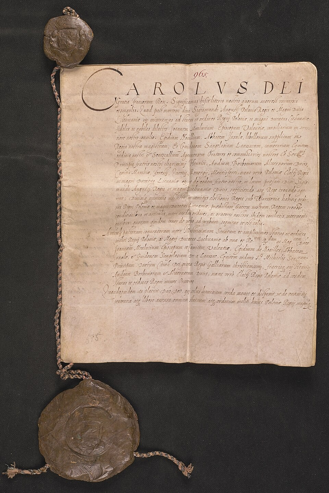
Ilustracja: pacta-1573.jpg
Co powiedzieć / zrobić: To obietnice, nie dowód ich wykonania. Akademia Krakowska to dzisiejszy Uniwersytet Jagielloński. MHP potwierdza finansowanie nauki stu szlachciców w Paryżu. Ilustracja to potwierdzenie pacta conventa przez Karola IX w imieniu swoim i Henryka z 10 września 1573, nie artykuły henrykowskie. Nie twierdź, że wszystkie punkty da się odczytać z miniatury. Nie dopisuj małżeństwa z Anną jako pewnego punktu końcowego tekstu pactów Henryka.
Dokładny tekst i kompozycja:
Karta ucznia · część 2 · praca w parach
Przy każdym zdaniu zapiszcie pełną nazwę dokumentu.
Wyjaśnijcie: dlaczego drugie zdanie nie jest zasadą dla każdego króla?
Ilustracja: Autorski układ treści: dokument / oś / pole zadania; bez osobnej ilustracji dekoracyjnej.
Co powiedzieć / zrobić: Główne zadanie: każdy zapisuje na własnej karcie, para uzgadnia. 2 minpracy,1 minomówienia,30 suzasadnienia. Klucz 1 i 3 artykuły henrykowskie;2 i 4 pacta conventa. Uzasadnienie: chodzi o Henryka, jego związek z Francją i osobistą obietnicę, nie stały sposób organizowania władzy. Wsparcie: pytaj „Czy dotyczy każdego przyszłego monarchy?”. Przy 15 osobach ostatnia grupa 3 osobowa; przy 20 dziesięćpar.
Dokładny tekst i kompozycja:
Karta ucznia · część 3 · 1 minuta
Artykuły henrykowskie: stałe ____________________.
Przykład: ____________________.
Pacta conventa: osobiste ____________________.
Przykład Henryka: ____________________.
Ilustracja: Autorski układ treści: dokument / oś / pole zadania; bez osobnej ilustracji dekoracyjnej.
Co powiedzieć / zrobić: Uczeń sam domyka notatkę. Model: zasady ustroju; zwoływanie sejmu co dwa lata; zobowiązania króla; np.wsparcie młodzieży we Francji. Sprawdź dwie odpowiedzi ustnie, bez osobnego przepisywania klucza. Pełne odpowiedzi są w przewodniku.
Dokładny tekst i kompozycja:
Szlachta wybiera Henryka Walezego.
Po śmierci brata Henryk opuszcza Polskę, by objąć tron Francji.
Henryk nie wraca. Szlachta decyduje o wyborze następcy.
Ilustracja: Autorski układ treści: dokument / oś / pole zadania; bez osobnej ilustracji dekoracyjnej.
Co powiedzieć / zrobić: Koronacja 21 lutego 1574, wyjazd w nocy 18/19 czerwca 1574. Nie nazywaj 12 maja 1575 bezsporną datą formalnej detronizacji: był to wyznaczony termin powrotu. Dzieje.pl wyraźnie zaznaczają brak formalnej detronizacji. Bezpiecznie: w 1575 zdecydowano o kolejnym wyborze. Galeria używa umownego zakresu 1573–1575; wiele podręczników kończy na faktycznym wyjeździe 1574. Henryk nadal używał polskiej tytulatury.
Dokładny tekst i kompozycja:
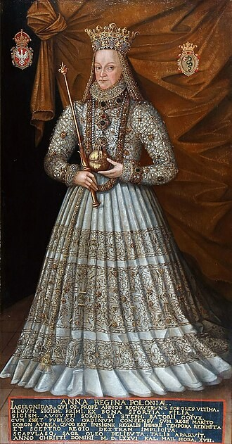
Ilustracja: anna.jpg
Co powiedzieć / zrobić: Nie przedstawiaj 1575 jako podwójnego wyboru tego samego dnia na identycznych zasadach: najpierw ogłoszono Maksymiliana, potem opozycja wybrała Annę z warunkiem małżeństwa z Batorym. Anna została koronowana wspólnie z Batorym w 1576. Maksymilian II to nie Ernest, kandydat 1573. Ciekawostka 3: po wygaśnięciu męskiej linii dynastii Jagiellonka znów znalazła się na tronie.
Dokładny tekst i kompozycja:
Decydowała o obsadzie tronu; król musiał przyjąć zasady ograniczające jego władzę.
Rywalizacja stronnictw i podwójne elekcje utrudniały zgodny wybór.
Obce dynastie i państwa próbowały wpływać na wybór korzystnego dla siebie monarchy.
To nie był jedyny ani bezpośredni powód późniejszego upadku państwa.
Ilustracja: Autorski układ treści: dokument / oś / pole zadania; bez osobnej ilustracji dekoracyjnej.
Co powiedzieć / zrobić: Odwołaj się do konkretnych przykładów: warunkiHenryka, spór 1575, zagraniczni kandydaci. Nie przeskakuj automatycznie od elekcji 1573 do rozbiorów. Magnaci i zależności międzynarodowe nasilały trudności w późniejszych stuleciach; to proces, nie gotowy skutek następnego dnia. Zapytaj: „Dlaczego wybór króla mógł jednocześnie wzmacniać szlachtę i wywoływać spór?”.
Dokładny tekst i kompozycja:
1573–1575
wybrana 1575
koronowana 1576
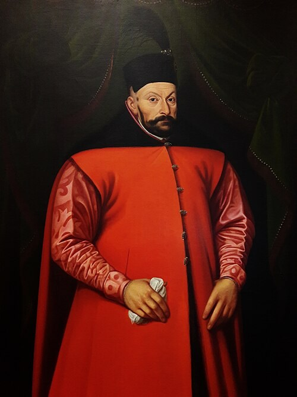
1576–1586
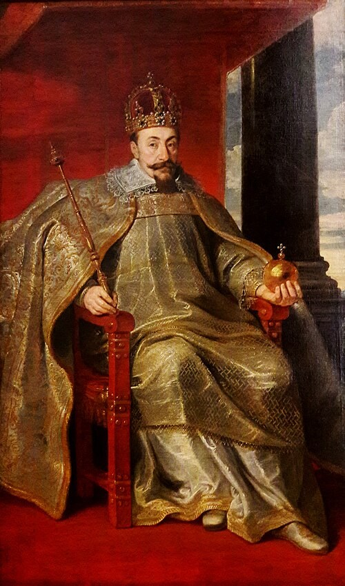
1587–1632
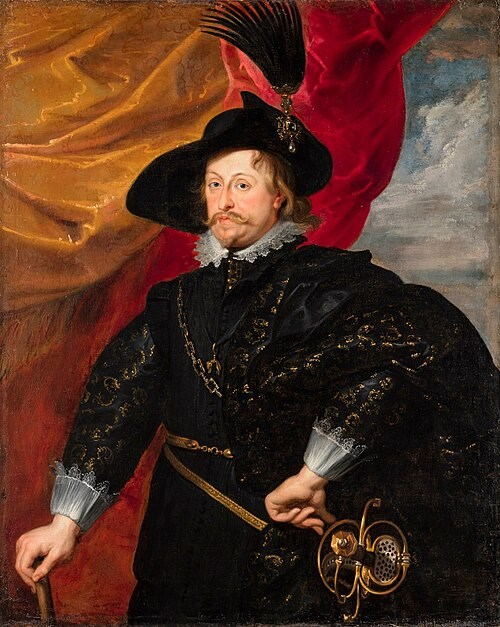
1632–1648
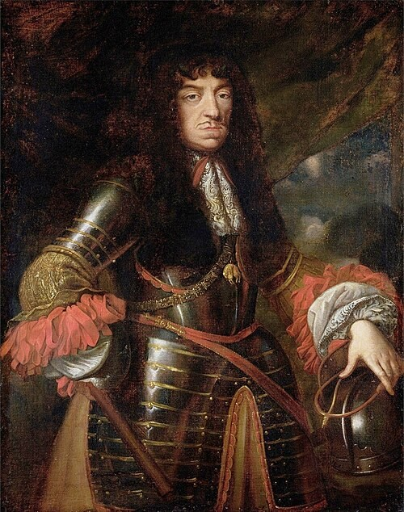
1648–1668
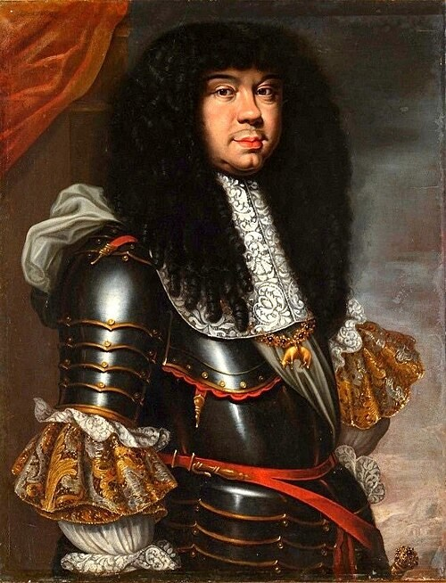
1669–1673
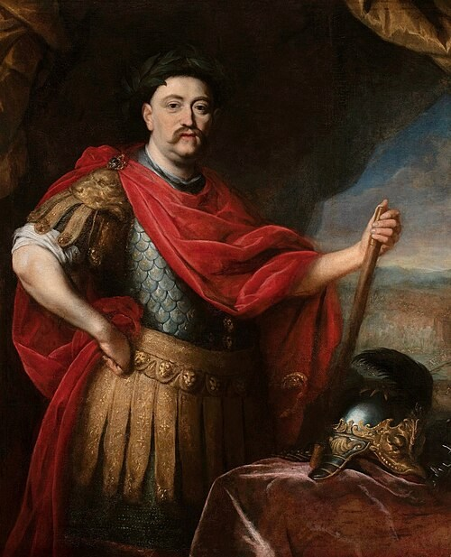
1674–1696
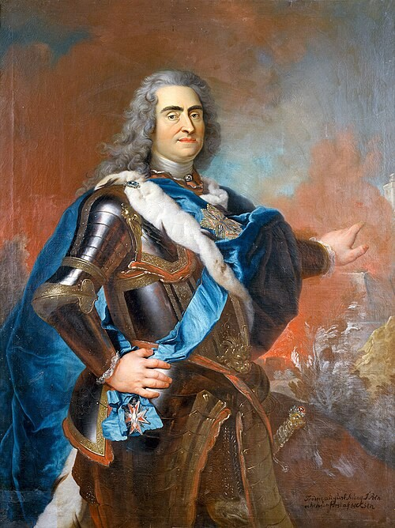
1697–1706
1709–1733
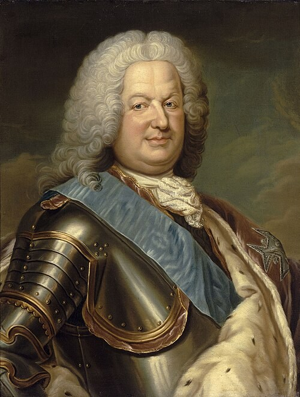
1704–1709
1733–1736
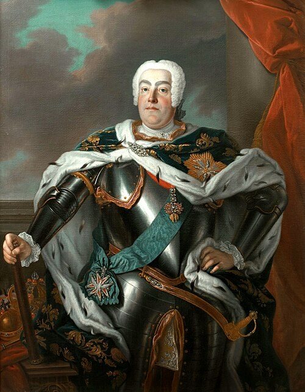
1733–1763
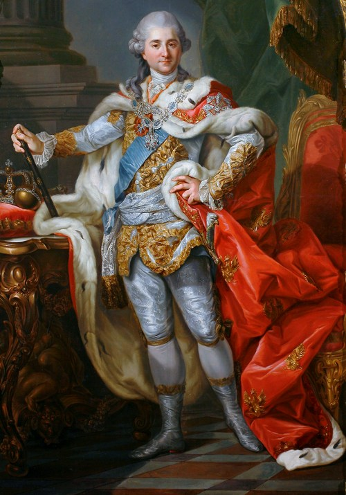
1764–1795
Henryk wyjechał w 1574. Anna koronowana z Batorym; para monarsza do 1586.
Nakładające się daty oznaczają rywalizację o tron, nie błąd kolejności.
Ilustracja: henryk.jpg; anna.jpg; stefan.jpg; zygmunt-iii.jpg; wladyslaw-iv.jpg; jan-kazimierz.jpg; michal.jpg; jan-sobieski.jpg; august-ii.jpg; stanislaw-leszczynski.jpg; august-iii.jpg; stanislaw-august.jpg
Co powiedzieć / zrobić: Orientacja, nie lista do wyuczenia dziś.12 osób, w tym Anna. Henryk 1573–1575 umownie do ponownego bezkrólewia; wyjazd 1574. Anna wybrana 1575, koronowana 1 maja 1576 razem z Batorym; po jego śmierci 1586 pozostaje królową wdową do 1596, a królem wybrano Zygmunta III. Batory wybrany 1575, konwencjonalne panowanie 1576–1586. August II i Leszczyński wracali na tron; daty konkurencyjnych panowań nakładają się. Poniatowski abdykował 1795, nie 1796 jak błędna tabela jednej lekcji ZPE.
Dokładny tekst i kompozycja:
Karta ucznia · ostatni zapis · 30 sekund
Wybrano ____________________.
W 1574 r. opuścił Polskę, by objąć tron ____________________.
Szlachta zyskała wpływ na władzę, ale wybory mogły prowadzić do ____________________.
Ilustracja: Autorski układ treści: dokument / oś / pole zadania; bez osobnej ilustracji dekoracyjnej.
Co powiedzieć / zrobić: Klucz: Henryk Walezy; Francji; sporów/konfliktów. Tylko trzy krótkie uzupełnienia, bez nowej pełnej notatki.
Dokładny tekst i kompozycja:
Wybrany król musiał porozumieć się z tymi, którzy dali mu koronę.
Ilustracja: Autorski układ treści: dokument / oś / pole zadania; bez osobnej ilustracji dekoracyjnej.
Co powiedzieć / zrobić: Zakończenie do powiedzenia: „Na początku pytaliśmy, kto ma dostać koronę. Teraz wiemy, że równie ważne było drugie pytanie: czego królowi wolno, a czego nie. Szlachta nie chciała tylko wybrać osoby — chciała też zachować wpływ na jej rządy”. Nie wprowadzaj nowej aktywności.
Dokładny tekst i kompozycja:
Odpowiedz samodzielnie:
Ilustracja: Autorski układ treści: dokument / oś / pole zadania; bez osobnej ilustracji dekoracyjnej.
Co powiedzieć / zrobić: Odpowiedź indywidualna na własnej karcie:90 s na trzy krótkie wpisy,30 s na zebranie i wskazanie przykładowej odpowiedzi. Każdy pozostawia własny dowód zrozumienia, nie tylko ochotnicy. Klucz: szlachta; pacta conventa, osobiste zobowiązanie; spór stronnictw, podwójna elekcja lub naciski zagraniczne. Rdzeń kończy się po tej kontroli.